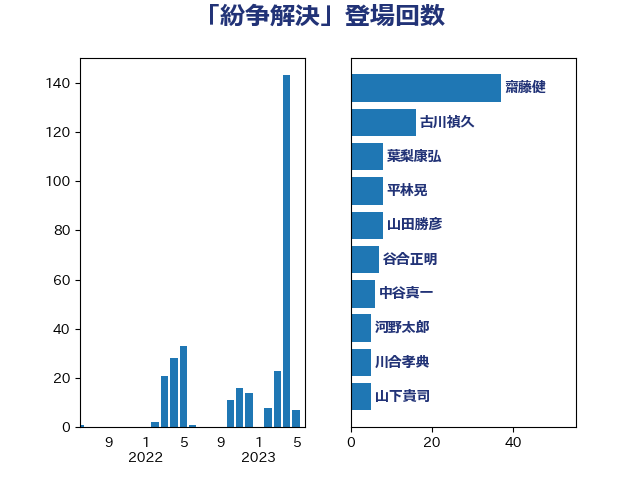

単語「紛争解決」

| 齋藤健 | 自由民主党 | 37 回 |
| 古川禎久 | 自由民主党 | 16 回 |
| 葉梨康弘 | 自由民主党 | 8 回 |
| 平林晃 | 公明党 | 8 回 |
| 山田勝彦 | 立憲民主党 | 8 回 |
| 谷合正明 | 公明党 | 7 回 |
| 中谷真一 | 自由民主党 | 6 回 |
| 河野太郎 | 自由民主党 | 5 回 |
| 川合孝典 | 国民民主党 | 5 回 |
| 山下貴司 | 自由民主党 | 5 回 |
| 水野素子 | 立憲民主党 | 4 回 |
| 岸田文雄 | 自由民主党 | 4 回 |
| 田中昌史 | 自由民主党 | 3 回 |
| 牧山ひろえ | 立憲民主党 | 3 回 |
| 源馬謙太郎 | 立憲民主党 | 3 回 |
| 山添拓 | 日本共産党 | 3 回 |
| 堀場幸子 | 日本維新の会 | 3 回 |
| 鈴木庸介 | 立憲民主党 | 2 回 |
| 金城泰邦 | 公明党 | 2 回 |
| 篠原豪 | 立憲民主党 | 2 回 |
| 津島淳 | 自由民主党 | 2 回 |
| 横山信一 | 公明党 | 2 回 |
| 大串正樹 | 自由民主党 | 2 回 |
| 高橋はるみ | 自由民主党 | 1 回 |
| 長峯誠 | 自由民主党 | 1 回 |
| 長友慎治 | 国民民主党 | 1 回 |
| 鈴木義弘 | 国民民主党 | 1 回 |
| 野村哲郎 | 自由民主党 | 1 回 |
| 西村康稔 | 自由民主党 | 1 回 |
| 舩後靖彦 | れいわ新選組 | 1 回 |
| 緒方林太郎 | 無所属 | 1 回 |
| 簗和生 | 自由民主党 | 1 回 |
| 盛山正仁 | 自由民主党 | 1 回 |
| 田村智子 | 日本共産党 | 1 回 |
| 櫛渕万里 | れいわ新選組 | 1 回 |
| 梅村みずほ | 日本維新の会 | 1 回 |
| 川田龍平 | 立憲民主党 | 1 回 |
| 岩渕友 | 日本共産党 | 1 回 |
| 山田美樹 | 自由民主党 | 1 回 |
| 小田原潔 | 自由民主党 | 1 回 |
| 安江伸夫 | 公明党 | 1 回 |
| 大河原まさこ | 立憲民主党 | 1 回 |
| 大塚耕平 | 国民民主党 | 1 回 |
| 大口善徳 | 公明党 | 1 回 |
| 嘉田由紀子 | 無所属 | 1 回 |
| 和田義明 | 自由民主党 | 1 回 |
| 吉良よし子 | 日本共産党 | 1 回 |
| 佐藤正久 | 自由民主党 | 1 回 |
| 三宅伸吾 | 自由民主党 | 1 回 |